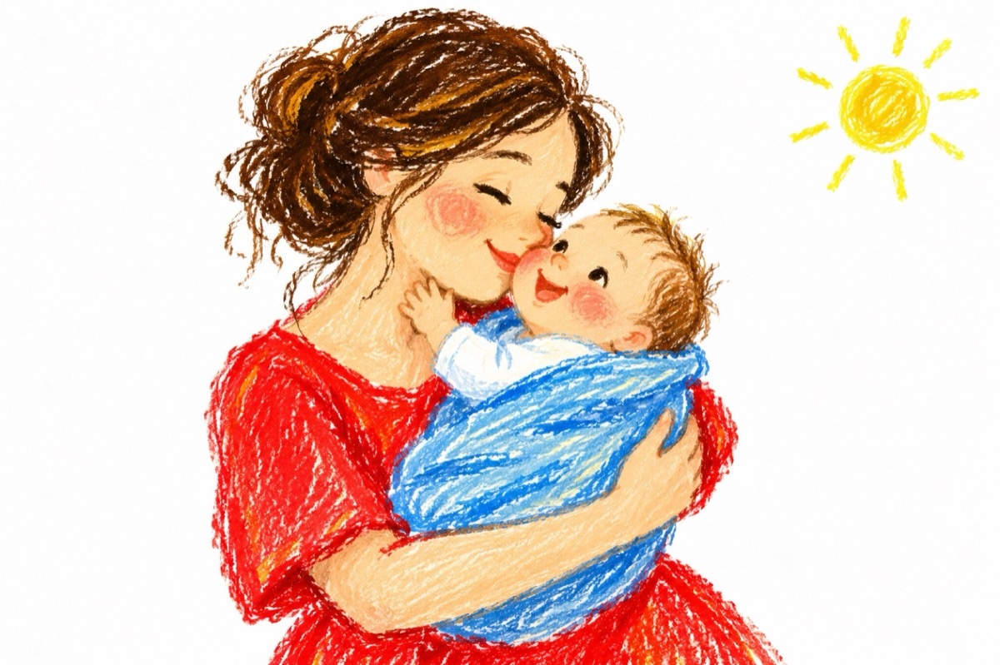

De ziua mamei
Când am făcut ochii mari
M-am simțit ca și plutind
Nu cred că eram prin nori
Ci aici, chiar pe pământ
Primeam o dulce căldură
Și un dulce legănat
Aveam gustul dulce-n gură
Și pe obrăjori pupat
Se pare că gânguream
Nu puteam ca să-mi dau seama
Cu un îngeraș vorbeam
Cine credeți, era mama!
Și văzând-o i-am zâmbit
Ea plină de fericire
Mami, mami, mi-a grăit.
Și-am simțit a ei iubire!
Vasile Groza